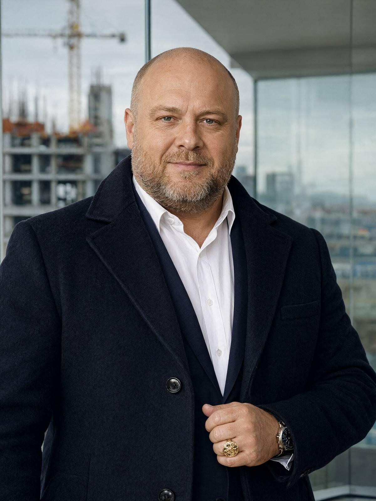

Місто: Львів
Дата: 14.11.2024
Час початку: 14:10 Час закінчення: 15:02
Місце проведення: Галицьке ВП ГУНП у Львівській області, кабінет № 214
Складає протокол: капітан поліції Стасюк О.М., старший слідчий СВ Галицького ВП ГУНП у Львівській області
Допитується: Кульчицький Тарас Ігорович, 30.09.1975 р.н., директор ТОВ «Кульчицький Девелопмент Груп», проживає: смт Брюховичі, вул. Сосновий Бір, 7, тел. +380 67 700 77 41.
Статус: свідок.
Свідку роз'яснено, що відповідно до ст. 63 Конституції України він має право не давати показань чи пояснень щодо себе, членів своєї сім'ї та близьких родичів. За відмову від давання показань або завідомо неправдиві показання передбачена відповідальність за ст. 384 КК України. Свідок попереджений і підтвердив розуміння. Від адвоката відмовився: «мені нема чого приховувати».
Питання: Ви знайомі з Андрієм Сенишиним, приватним нотаріусом?
Відповідь: Так, знайомий. Ми з ним не друзі, але знаємо один одного років п'ять. Він посвідчував папери для моїх проєктів, це звичайна робота. Він був дуже принциповий. Таких я поважаю, навіть коли вони заважають.
Питання: Які відносини у вас були з Сенишиним в останні місяці?
Відповідь: Ділові. Ми з ним мали спір щодо земельної ділянки в Сокільниках. Ділянка належить Петренку Івану, він уже немолодий, і угоду з ним було підготовлено. Потрібна була нотаріальна дія. Сенишин її зірвав. Це неприємно, але так буває. Я в бізнесі тридцять років і знаю, що кожна справа має дві сторони.
Питання: Скандал у конторі 7 листопада. Що це було?
Відповідь: Я був роздратований, це правда. Я прийшов поговорити, а він мене не слухав. Сказав, що я «не знаю, з ким зв'язався». Ми обидва сказали багато. Я не піднімав рук і нікому не погрожував фізично. Я не такий.
Питання: Чи спілкувалися ви із Сенишиним 12 листопада?
Відповідь: Так, телефонував йому після обіду. Коротко, хвилин п'ять. Я просив його переглянути позицію щодо угоди. Він відмовив. Розмови не вийшло.
Питання: Ваше SMS того ж дня, о 17:52, з текстом «Ти пошкодуєш, Андрію. Я по-хорошому пропонував». Що ви мали на увазі?
Відповідь: Це була емоція. Я писав під настрій, після розмови, в якій мене прийняли як останнього дурня. Я пишу такі речі, коли хвилююся. Це не погроза. Пошкодувати можна багато чого, і він, мабуть, пошкодував би, якби погодився на розумні умови. Я вибачився б, якби ми поговорили. Але тепер уже нема з ким.
Питання: Як ви провели вечір 12 листопада?
Відповідь: Увесь вечір удома, в Брюховичах. Вечеряли з дружиною, потім я працював з документами в кабінеті, потім дивилися щось разом. Машина стояла в гаражі, я нікуди не виїжджав. Дружина це підтвердить, вона весь вечір була зі мною.
Питання: Чи були ви в той вечір біля будинку Сенишина на вулиці Ґерданській, 9?
Відповідь: Ні. Я ж сказав, що весь вечір був удома. Я розумію, що ви зараз перевіряєте всіх, хто з ним посварився. На вашому місці я теж так робив. Але я в цьому не брав участі.
Питання: Вам відомо щось про довіреність від імені Петренка Івана, нібито посвідчену Сенишиним?
Відповідь: Я бачив її вперше, коли мені показали копію. Я ніколи її не замовляв. Мені здається, її робили люди, які хотіли швидко провернути продаж. Мене самого підставили, пане капітане. Я стою на тому, що угода була чесна. Хто її підробив, мені невідомо.
Питання: Чи обговорювали ви з Сенишиним щось, що не стосувалося угоди?
Відповідь: Ні. Ми говорили лише про справи. Про його особисте життя я нічого не знаю і не цікавився. Він був людиною, яка тримає все в собі. Це моя особиста думка, записуйте, якщо треба.
Питання: Чи маєте ви з Сенишиним фінансові зобов'язання одне перед одним?
Відповідь: Ні. Я не даю грошей в борг людям, яких добре не знаю, а його я знав мало.
Питання: Чи знаєте ви Гнатів Вікторію Олегівну?
Відповідь: Бачив її кілька разів. Це цивільна дружина Сенишина, лікарка. Особисто ми не знайомі. Чим вона може бути цікава слідству, я не розумію.
Питання: У 2019 році проти вас велося кримінальне провадження щодо захоплення земельної ділянки. Чи пов'язана з ним ця справа?
Відповідь: Ні. Тоді справу закрили, бо не було складу, це написано в документах. Мене з тих часів ніхто не лякає, і я ніколи не боявся законів. Я боюся тільки помилок, а вони трапляються в усіх. Ділянка Петренка тут ні до чого.
Питання: Ваш адвокат Юрій Савчин представляв вас у тому провадженні?
Відповідь: Він представляє мої інтереси в цілому, так. Юрій людина розумна, з ним добре працювати. Сьогодні я тут сам, бо мені нічого приховувати, але якщо знадобиться, він перевірить кожне моє слово.
Питання: Чи знаєте ви людей, які могли б мати доступ до бланків нотаріуса Сенишина?
Відповідь: Ні, таких людей я не знаю. Я не займаюся бланками і не маю доступу до нотаріальних контор. Я займаюся будівництвом житла. Звідки в чужій довіреності взявся його бланк, нехай розбираються ті, хто його видавав.
Питання: Чи намагалися ви особисто переконати Сенишина змінити рішення щодо угоди, окрім розмови з 12 листопада?
Відповідь: Я просив його розпорядитися спокійно, це моя манера. Ми говорили в конторі сьомого, потім я писав, потім дзвонив. Більше нічого. Я розумію, що в такій ситуації люди говорять гостро, але погроз фізичних не було ніяких.
Питання: Що б ви хотіли додати?
Відповідь: Мені нічого не приховувати. Я хочу, щоб слідство розібралося, хто підробив довіреність і хто насправді тримає в цій історії папери. Сподіваюся, у Галицькому відділенні є люди, які вміють слухати до кінця.
З моїх слів записано вірно. Протокол прочитано особисто, зауважень до протоколу не маю.
Свідок: /підпис/ Кульчицький Т.І.
Слідчий: /підпис/ капітан поліції Стасюк О.М.